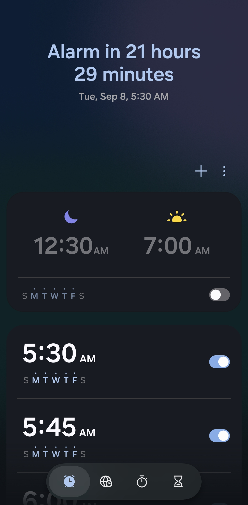
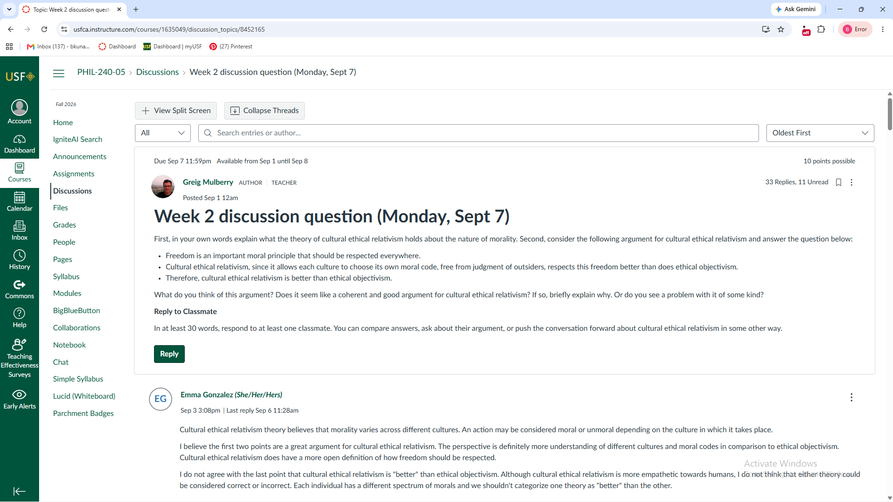
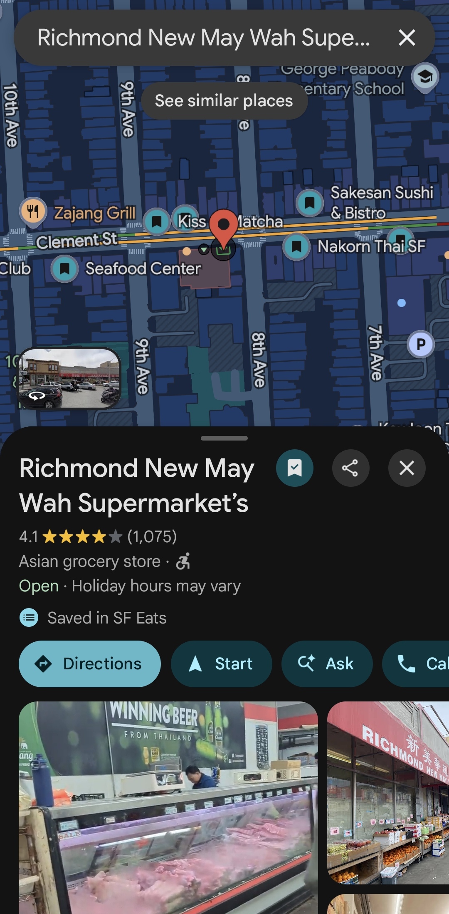
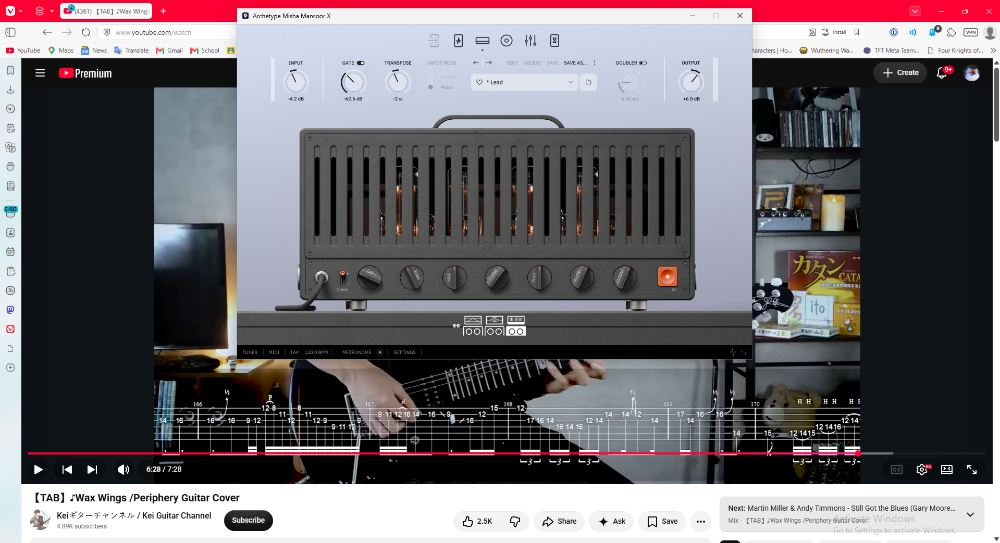

take a sip

Dont let the 5:30am fool you, I sleep through it all the time. Thats why im always late for anything. I also 6 other alarms as a fail safe but I usually just wake up before them to turn them off and go back to sleep. Sometimes I just to that subconsciously. But I have all of them off when I'm on break.
I basically cannot function without this. I more or less live and die by music. Its an essentail part of my life. I also have spotify hooked up with my alarm to randomly play one of my Liked Songs when I wake up. Albums I have on repeat right now are Bring Me The Horizon's Count Your Blessings(Repented) and Periphery's Pale White Dot. no mom its not a phase
Coffee also another integral part of my existance. I drink about 4 cups of coffee a day. Some would say thats wayyyyyy too much but some would say thats not enough. Some would say im addicted but I personally call it a hobby that I invest heavily into. I mainly do pourovers so having a stopwatch helps me make sure everything is accurate.
I love trying out different beans from different places on earth and from many differnt roasters from all across the world. So naturally I would need some kind of way to keep track of what ive tried and how much do I like them.
Here you can see me looking for my next target. Im like a kid in a candy store when I look for more coffee to buy. The beans im looking at right now are from Moonwake Coffee Roaster from San Jose. Their Nova series feature many elegant and sometimes rare coffee and I just love the way they roast, it really highlight the terrior of the coffee. as if i dont have enough coffee overflowing from my cabinet alr

Definately the least fun part of the day. do i really have to explain this

This is one of my go-to places for buying asian groceries and the prices are decent. I usually get some thinly sliced brisket and curry blocks, maybe some vegetables if im feeling healthy(never).
I probably scroll through marketplace once or twice a day looking for good deals on literally anything. Right now im looking to upgrade my coffee grinder and maybe a new gooseneck kettle. So thats what my feed looks like.
I go through my Instagram saved recipe folder to see what I can make for dinner with whatever is in my pantry or something that is going bad soon. I find to be a very convenient way to look for recipes instead of mindlessly trying to come up with something.
I go through reddit when im bored or ran out of things to do. I like to go to r/pourover for new coffee news or recipes or advice on gears or coffee resting time. I also find that its a really good place to look for coffee shop and coffee roaster recommendations.

I like praticing guitar towards the end of the day because it probably is one of the most fun part of the day. I practice through a Neural DSP plugin, the Archetype: Misha Mansoor, and it's become one of my main amps because it's just so versatile. I love the heavy, modern tones it's known for, but I'm just as into its clean sounds, plus the whammy effects and weird, experimental textures you can create with it.
Ahhhhhh yessss, one of my favorite and the least productive thing a person could do before going to bed. Does this do anything to benefit my life? ehhh sometimes. Do I enjoy it? hell yeah. As long as its fun I dont really mind(i swear i dont have short attention spans) This may or may not be the reason why my sleep schedule is soooo screwed up. Nobody asked for it but here is me doomscrolling